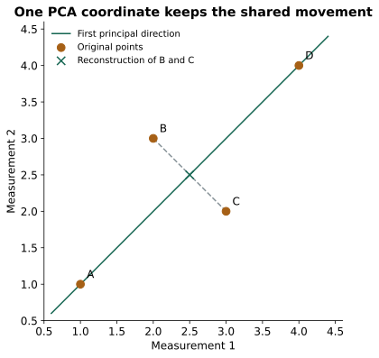

PCA: Preserve Variation in Fewer Dimensions
Expanded from PCA and LDA.pdf · View a handwritten page
Principal component analysis (PCA) replaces several measurements with fewer coordinates while preserving as much variation as possible. We will center four points, find their main direction, and see what is lost when two measurements become one.
Start with two measurements per row
| Point | Measurement 1 | Measurement 2 | Centered pair |
|---|---|---|---|
| A | 1 | 1 | (−1.5, −1.5) |
| B | 2 | 3 | (−0.5, 0.5) |
| C | 3 | 2 | (0.5, −0.5) |
| D | 4 | 4 | (1.5, 1.5) |
Both column means are 2.5. Subtract them to center the data. PCA will describe variation around this mean, so keep the means for projecting or reconstructing later observations.
Calculate the covariance matrix
Use sample covariance, dividing by $n-1=3$. For the first coordinate, the squared centered values sum to $2.25+0.25+0.25+2.25=5$. The second coordinate has the same sum. The cross-products sum to $2.25-0.25-0.25+2.25=4$.
$X_c$ holds the centered rows. The diagonal entries are the individual variances; the off-diagonal entries measure how the coordinates move together. Using $1/n$ would rescale all eigenvalues equally and leave the principal directions unchanged.
Choose a direction with large projected variance
A unit vector $v$ specifies a direction. The projection score of one centered point is $z=v^\top(x-\mu)$. Its variance over the data is $v^\top Sv$. We require $v^\top v=1$ because otherwise multiplying a direction by 100 would multiply the score variance by 10,000 without finding a better direction.
A Lagrange multiplier gives $Sv=\lambda v$. This is the eigenvector equation: choose the unit eigenvector whose eigenvalue is largest. In our matrix:
The first direction follows the diagonal where both measurements increase together. The second follows their difference. The total variance is $3+1/3=10/3$, so the first component explains $3/(10/3)=\mathbf{90\%}$ of the sample variance.
Project, then reconstruct
Using only the first component, add the two centered coordinates and divide by $\sqrt2$. For A, the score is $(-1.5-1.5)/\sqrt2\approx-2.1213$.
| Point | First score | Reconstructed pair |
|---|---|---|
| A | −2.1213 | (1, 1) |
| B | 0 | (2.5, 2.5) |
| C | 0 | (2.5, 2.5) |
| D | 2.1213 | (4, 4) |
Reconstruction uses $\hat x=\mu+zv_1$. B and C become the same point because their only difference lies along the discarded direction. Each has squared reconstruction error $0.5^2+0.5^2=0.5$, so the total is 1. That equals $(n-1)\lambda_2=3\times(1/3)$.

With several retained components, put their direction vectors into the columns of $V$. Scores are $Z=X_cV$ and reconstructions are $ZV^\top+\mu$. Flipping the sign of a direction also flips its scores and leaves the reconstruction unchanged.
import numpy as np
X = np.array([[1., 1.], [2., 3.], [3., 2.], [4., 4.]])
mean = X.mean(axis=0)
centered = X - mean
values, vectors = np.linalg.eigh(centered.T @ centered / 3)
v = vectors[:, -1] # eigenvalues are returned in ascending order
scores = centered @ v
reconstructed = mean + np.outer(scores, v)
print(values[-1] / values.sum()) # 0.9
print(np.sum((X - reconstructed)**2)) # 1.0Centering and scaling are separate decisions. Centering removes means; scaling changes the relative importance of feature units. Fit those operations and the PCA directions on training data, then reuse them for validation or new inputs. SVD of the centered matrix provides the same principal directions without explicitly constructing the covariance matrix.
What does PCA preserve, and what can it lose?
PCA preserves overall variation without using class labels. A low-variance direction can still contain useful class information, so retaining most of the variance does not guarantee a good classifier. The Fisher LDA guide uses labels to choose a projection around class separation instead.
With $d$ measurements, the maximum number of nonzero principal components is the rank of the centered data, at most $\min(d,n-1)$. Choose how many to retain based on the variance, reconstruction quality, and the task you want the representation to support.
From the handwritten notes
This guide expands the relevant material in PCA and LDA.pdf. The complete original contains both topics; the blog treats PCA, LDA projection, and LDA classification separately.
View original page 1

Further reading: